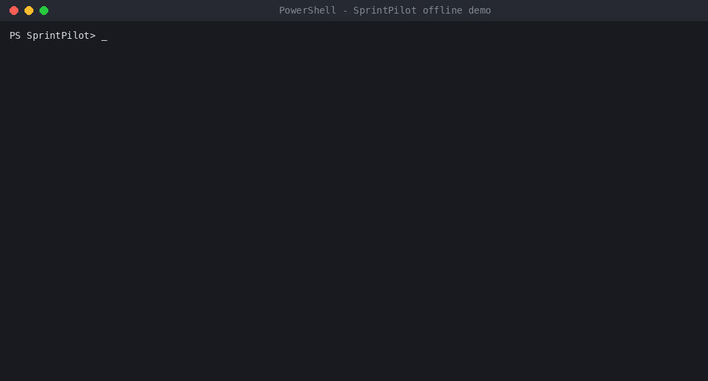

SprintPilot
Approval-gated sprint planning and Agile reporting for Jira teams, driven from PowerShell.
Nine Agile workflows packaged as prompt templates and a small, tested runner. Dry-run is the default, assignee changes need a named approver, and the live Jira path goes through an MCP server you configure. By Madhur Kumar Rana.
This page is a showcase of a local command-line project. It is not a hosted version of the tool. To see it work, run the offline demo below on Windows.
See it run

Terminal replay of a real run (paths shortened).
git clone https://github.com/madhur0770/SprintPilot.git
cd SprintPilot
.\scripts\demo-sprintpilot.ps1No account, Jira, Python or network needed. It uses fictional data and writes a Markdown report.
How it works
Runner (PowerShell / Bash)→Approval guardrails→Prompt assembly→Agent CLI + MCP→Jira (read)→Markdown report
- Dry-run by default; report-only modes reject
-Apply. - Approval gate: assignee-changing runs need
-ApprovedBymatching a configured authority, checked before the agent starts, with an audit log. - Private config: team map and reports are git-ignored; a validator scans for credential-like values.
The nine workflows
| Mode | Purpose | Can write |
|---|---|---|
shape-sprint | Propose sprint scope from the backlog | Yes |
triage-queue | Classify backlog items and next actions | Yes |
suggest-owner | Recommend assignees with confidence and risk | Yes |
balance-load | Find overload and propose safe moves | Yes |
inspect-sprint | Blocked, stale, unassigned and overdue work | No |
surface-risk | Delivery threats with next actions | No |
progress-pulse | Status snapshot with movement since last run | No |
standup-brief | Daily team summary | No |
retro-notes | Retrospective inputs | No |
Engineering evidence
- Unit tests for the validator and the offline demo.
- CI on Windows PowerShell 5.1, PowerShell 7 and Linux; the demo output is compared with a committed sample report on every push.
- Live workflow checked read-only against a Jira Cloud test project; write access not exercised.
Known limitations
- Quality of analysis depends on the model, MCP tools and team map.
- The approval check is a local string match, not an identity provider.
- The live path needs your own Jira and MCP setup and is not covered by automated tests.